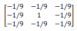
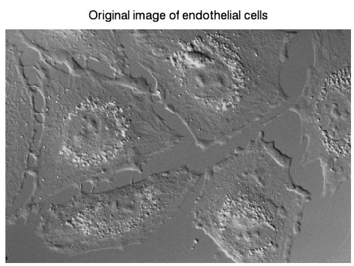
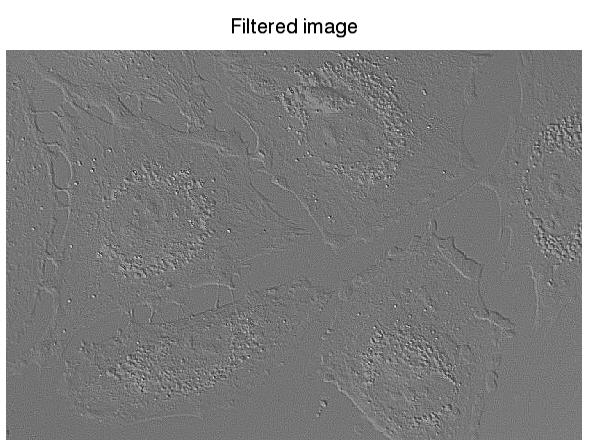
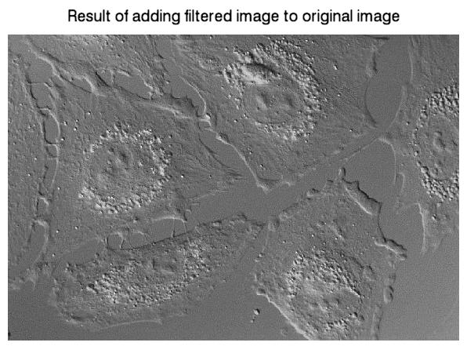

Sharpening an image typically involves a high-pass filter to increase the contrast between bright and dark regions to better reveal features. The following kernel is an example of a high-pass filter used to sharpen an image. This is just one example; other filters may include more weighting for the center point.

The following example uses the CONVOL function and the above kernel to sharpen a photomicrograph of cultured endothelial cells (Image courtesy of Michael J. Davis, Ph.D., College of Medicine, Texas A&M University).
This example data is available in the
examples/data
directory of your IDL installation. The code shown below creates the following three images, each displayed in separate windows.



; Import the image.
file = FILEPATH('endocell.jpg', $
SUBDIRECTORY = ['examples', 'data'])
READ_JPEG, file, orig_image
; Display the image.
img01 = IMAGE(orig_image, LOCATION = [0, 0], $
TITLE = 'Original image of endothelial cells')
; Create a kernel for a sharpening (high-pass) filter.
kernelSize = [3, 3]
kernel = REPLICATE(-1./9., kernelSize[0], kernelSize[1])
kernel[1, 1] = 1.
; Apply the filter to the image.
filteredImage = CONVOL(FLOAT(orig_image), kernel, $
/CENTER, /EDGE_TRUNCATE)
; Display the filtered image in a new window.
img02 = IMAGE(filteredImage, LOCATION = [250, 0], $
TITLE = 'Filtered image')
; Display the combined images in a new window.
img03 = IMAGE(orig_image + filteredImage, $
LOCATION = [500, 0], $
TITLE = 'Result of adding filtered image to original image')